vignettes/detailedWalkthrough.Rmd
detailedWalkthrough.RmdThis notebook breaks down the Harmony algorithm and model in the context of a simple real-world dataset.
After reading this, the user should have a better understanding of how
For this vignette we are going to use harmony among other tools that will help with the visualization and inspection of the algorithm intermediate states. Also, we provide a few helper functions that can be found in the source block below.
## Source required libraries
library(data.table)
library(tidyverse)
library(ggthemes)
library(ggrepel)
library(harmony)
library(patchwork)
library(tidyr)
## Useful util functions
cosine_normalize <- function(X, margin) {
if (margin == 1) {
res <- sweep(as.matrix(X), 1, sqrt(rowSums(X ^ 2)), '/')
row.names(res) <- row.names(X)
colnames(res) <- colnames(X)
} else {
res <- sweep(as.matrix(X), 2, sqrt(colSums(X ^ 2)), '/')
row.names(res) <- row.names(X)
colnames(res) <- colnames(X)
}
return(res)
}
onehot <- function(vals) {
t(model.matrix(~0 + as.factor(vals)))
}
colors_use <- c(`jurkat` = rgb(129, 15, 124, maxColorValue=255),
`t293` = rgb(208, 158, 45, maxColorValue=255),
`half` = rgb(0, 109, 44, maxColorValue=255))
do_scatter <- function(umap_use, meta_data, label_name, no_guides = TRUE, do_labels = TRUE, nice_names,
palette_use = colors_use,
pt_size = 4, point_size = .5, base_size = 10, do_points = TRUE, do_density = FALSE, h = 4, w = 8) {
umap_use <- umap_use[, 1:2]
colnames(umap_use) <- c('X1', 'X2')
plt_df <- umap_use %>% data.frame() %>%
cbind(meta_data) %>%
dplyr::sample_frac(1L)
plt_df$given_name <- plt_df[[label_name]]
if (!missing(nice_names)) {
plt_df %<>%
dplyr::inner_join(nice_names, by = "given_name") %>%
subset(nice_name != "" & !is.na(nice_name))
plt_df[[label_name]] <- plt_df$nice_name
}
plt <- plt_df %>%
ggplot(aes(X1, X2, colour = .data[[label_name]], fill = .data[[label_name]])) +
theme_tufte(base_size = base_size) +
theme(panel.background = element_rect(fill = NA, color = "black")) +
guides(color = guide_legend(override.aes = list(stroke = 1, alpha = 1, shape = 16, size = 4)), alpha = "none") +
scale_color_manual(values = palette_use) +
scale_fill_manual(values = palette_use) +
theme(plot.title = element_text(hjust = .5)) +
labs(x = "UMAP 1", y = "UMAP 2")
if (do_points)
plt <- plt + geom_point(size = 0.2)
if (do_density)
plt <- plt + geom_density_2d()
if (no_guides)
plt <- plt + theme(legend.position = "none")
if (do_labels)
plt <- plt + geom_label_repel(data = data.table(plt_df)[, .(X1 = mean(X1), X2 = mean(X2)), by = label_name], label.size = NA,
aes(label = .data[[label_name]]), color = "white", size = pt_size, alpha = 1, segment.size = 0) +
guides(col = "none", fill = "none")
return(plt)
}This dataset is described in figure 2 of the Harmony manuscript. We downloaded 3 cell line datasets from the 10X website. The first two (jurkat and 293t) come from pure cell lines while the half dataset is a 50:50 mixture of Jurkat and HEK293T cells. We inferred cell type with the canonical marker XIST, since the two cell lines come from 1 male and 1 female donor.
We library normalized the cells, log transformed the counts, and scaled the genes. Then we performed PCA and kept the top 20 PCs. We begin the analysis in this notebook from here.
data(cell_lines)
V <- cell_lines$scaled_pcs
V_cos <- cosine_normalize(V, 1)
meta_data <- cell_lines$meta_dataTo get a feel for the data, let’s visualize the cells in PCA space. The plots below show the cells’ PC1 and PC2 embeddings. We color the cells by dataset of origin (left) and cell type (right).
do_scatter(V, meta_data, 'dataset', no_guides = TRUE, do_labels = TRUE) +
labs(title = 'Colored by dataset', x = 'PC1', y = 'PC2') +
do_scatter(V, meta_data, 'cell_type', no_guides = TRUE, do_labels = TRUE) +
labs(title = 'Colored by cell type', x = 'PC1', y = 'PC2') +
NULL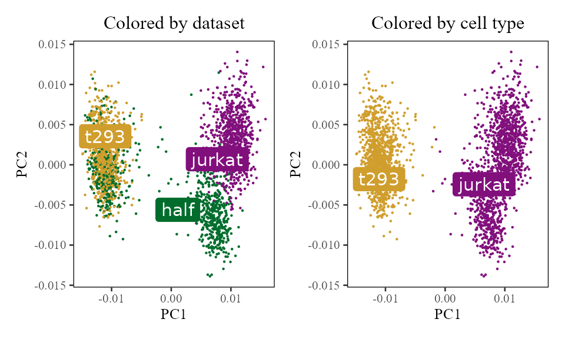
The first thing we do is initialize a Harmony object. We pass 2 data structures:
The rest of the parameters are described below. A few notes:
set.seed(1)
harmonyObj <- harmony::RunHarmony(
data_mat = V, ## PCA embedding matrix of cells
meta_data = meta_data, ## dataframe with cell labels
theta = 1, ## cluster diversity enforcement
vars_use = 'dataset', ## variable to integrate out
nclust = 5, ## number of clusters in Harmony model
max_iter = 0, ## stop after initialization
return_object = TRUE ## return the full Harmony model object
)## Transposing data matrix## Using automatic lambda estimation## Thetas: 1## Initializing state using k-means centroids initialization## Initializing centroids
## Cache embeddings as local R variables (cells × dims, matching input V).
## Z_orig / Z_corr are not directly accessible as fields; use getter methods.
Z_orig <- t(harmonyObj$getZorig()) # N × d
Z_cos <- cosine_normalize(Z_orig, 1) # L2-normalised rows, N × d
## Reconstruct the design matrix (B × N) from meta_data, matching what
## harmony built internally
phi <- Matrix::t(Matrix::sparse.model.matrix(~0 + as.factor(meta_data$dataset)))
## phi_moe = intercept row prepended to phi (matches Phi_moe inside harmony)
phi_moe <- rbind(Matrix::Matrix(1, nrow = 1, ncol = ncol(phi), sparse = TRUE), phi)By initializing the object, we have prepared the data in 2 ways. First, we’ve scaled the PCA matrix to give each cell unit length. Second, we’ve initialized cluster centroids with regular kmeans clustering on these scaled data. We’ll dig into these two steps below.
A key preprocessing step of Harmony clustering is L2 normalization. As shown in Haghverdi et al 2018, scaling each cell to have L2 norm equal to 1 induces a special property: Euclidean distance of the scaled cells is equivalent to cosine distance of the unscaled cells. Cosine distance is a considerably more robust measure of cell-to-cell similarity (CITE Martin and Vlad). Moreover, it has been used in clustering analysis of high dimensional text datasets (CITE NLP spherical kmeans).
Normalization of cell :
TL;DR Harmony clustering uses cosine distance. By normalizing each cell to have unit length, we can directly visualize the cosine distances between cells (right). These relationships are not obvious in Euclidean space (left).
In the Harmony object, we now have 2 copies of the cell embeddings. The first, , is the original PCA matrix (PCs by cells). The second, , starts as the normalised version of and is updated to the corrected (unnormalised) embeddings after each correction step. — the unit-length-scaled embeddings used during clustering — is a derived quantity computed in user space as and is not stored inside the harmony object. Since this scaling projects cells onto a unit hypersphere, cells appear pushed away from the origin (0,0).
do_scatter(Z_orig, meta_data, 'dataset', no_guides = TRUE, do_labels = TRUE) +
labs(title = 'Z_orig', subtitle = 'Euclidean distance', x = 'PC1', y = 'PC2') +
do_scatter(Z_cos, meta_data, 'dataset', no_guides = TRUE, do_labels = TRUE) +
labs(title = 'Z_cos', subtitle = 'Induced Cosine distance', x = 'PC1', y = 'PC2')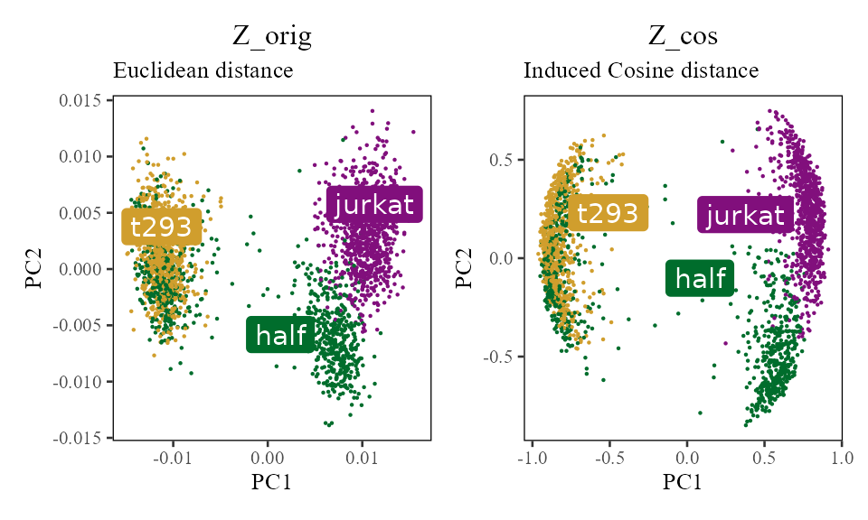
In the scatterplot (right), cells that are nearby have a high cosine similarity. Although it is not obvious in this example, cells closeby in Euclidean space do not always have a high cosine similarity!
Above, we only visualize the first two PCs. In this simple example with cell lines, this is sufficient to visualize most of the variation. Note, however, that all clustering and correction in Harmony uses all the PCs. For completeness, we can visualize the quantiles of PCA embeddings for all 20 PCs, colored by original dataset.
Z_cos %>% data.frame() %>%
cbind(meta_data) %>%
tidyr::gather(key, val, X1:X20) %>%
ggplot(aes(reorder(gsub('X', 'PC', key), as.integer(gsub('X', '', key))), val)) +
geom_boxplot(aes(color = dataset)) +
scale_color_manual(values = colors_use) +
labs(x = 'PC number', y = 'PC embedding value', title = 'Z_cos (unit scaled PCA embeddings) for all 20 PCs') +
theme_tufte(base_size = 10) + geom_rangeframe() +
theme(axis.text.x = element_text(angle = 45, hjust = 1))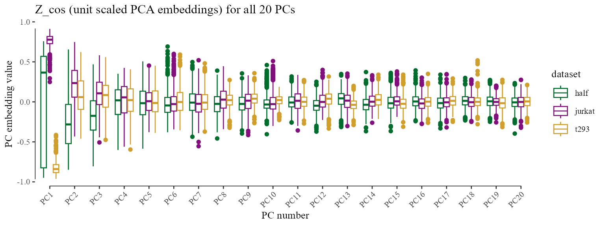
Initializing the Harmony object also triggered initialization of all the clustering data structures. Harmony currently uses regular kmeans, with 10 random restarts, to find initial locations for the cluster centroids. Let’s visualize these centroids directly! We can do this by accessing the Y matrix in the Harmony object. This is a matrix with rows and columns, so each column represents one 20-dimensional centroid.
Remember that we set the number of clusters to 5 above, so there are now 5 clusters below.
cluster_centroids <- harmonyObj$Y
do_scatter(Z_cos, meta_data, 'dataset', no_guides = FALSE, do_labels = FALSE) +
labs(title = 'Initial kmeans cluster centroids', subtitle = '', x = 'PC1', y = 'PC2') +
geom_point(
data = data.frame(t(cluster_centroids)),
color = 'black', fill = 'black', alpha = .8,
shape = 21, size = 6
) +
NULL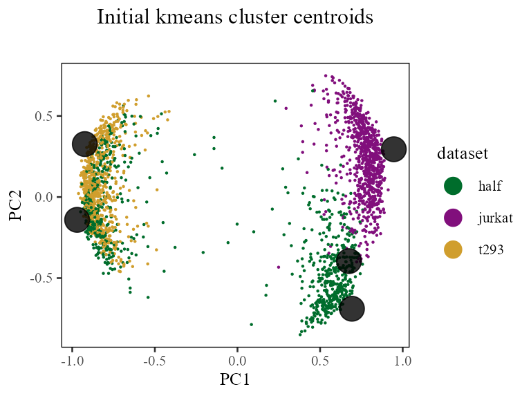
Based on these cluster centroids, we also assigned probabilistic cluster memberships to each cell. In the algorithm, this is done using the formula below.
Above, is a value from to and denotes the probability that cell is assigned to cluster . Accordingly, the squared distance is the distance between cell and the centroid of cluster . Because we’re using cosine distance (i.e. cells and centroids have unit length), we can simplify the distance computation:
Finally, the symbol means that we will normalize R to form a proper probability distribution for each cell:
Let’s take a look at these initial cluster assignments. We can find these assignments in the row by column matrix .
cluster_assignment_matrix <- harmonyObj$RThe plots below color each cell by cluster membership, from 0 (grey) to 1 (blue). For clarity, each column is a different dataset. Each row is one of the 5 clusters.
Z_cos %>% data.frame() %>%
cbind(meta_data) %>%
tibble::rowid_to_column('id') %>%
dplyr::inner_join(
cluster_assignment_matrix %>% t() %>% data.table() %>%
tibble::rowid_to_column('id') %>%
tidyr::gather(cluster, r, -id) %>%
dplyr::mutate(cluster = gsub('V', 'Cluster ', cluster)),
by = 'id'
) %>%
dplyr::sample_frac(1L) %>%
ggplot(aes(X1, X2, color = r)) +
geom_point(size=0.2) +
theme_tufte(base_size = 10) + theme(panel.background = element_rect()) +
facet_grid(cluster ~ dataset) +
scale_color_gradient(low = 'lightgrey', breaks = seq(0, 1, .1)) +
labs(x = 'Scaled PC1', y = 'Scaled PC2', title = 'Initial probabilistic cluster assignments')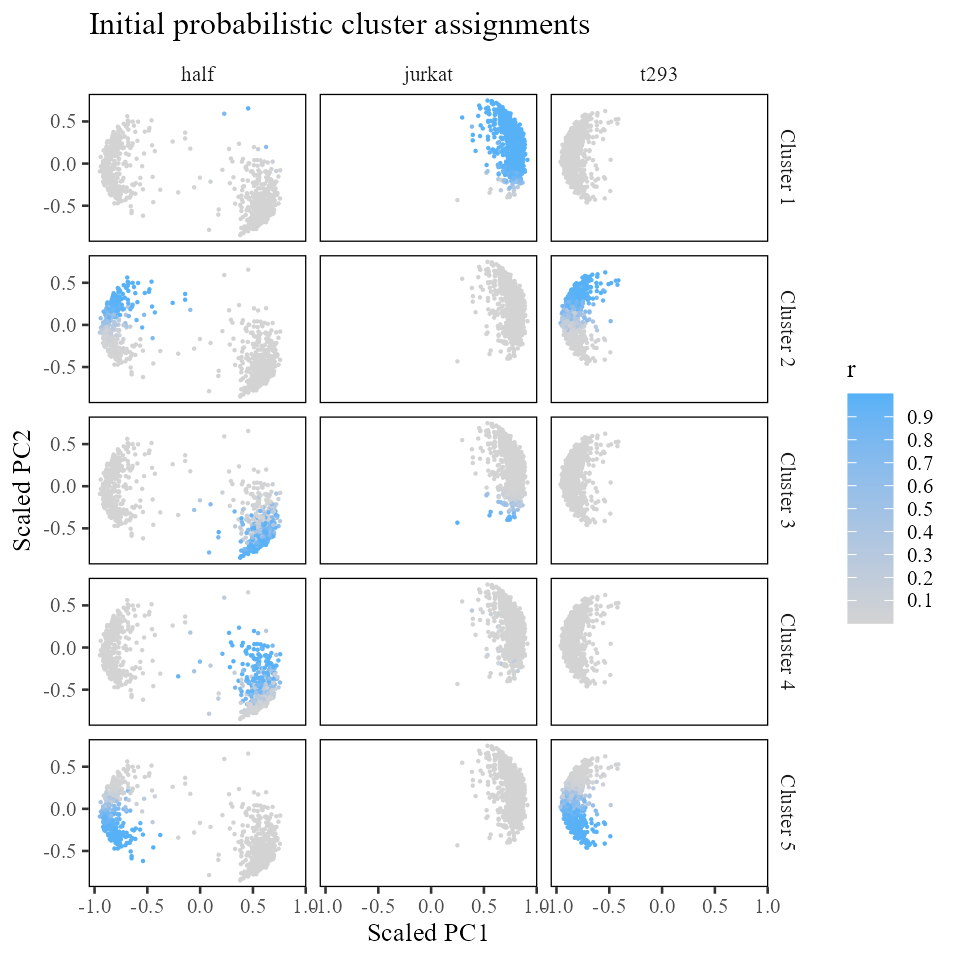
A key part of clustering in Harmony is diversity. We can evaluate the initial diversity of clustering by aggregating the number of cells from each batch assigned to each cluster. For this, we need two data structures:
(B rows, N columns): the one-hot encoded design matrix.
(K rows, N columns): the cluster assignment matrix.
The cross product gives us a matrix of the number of cells from batch b (columns) that are in cluster k (rows). Note that since cluster assignment is probabilistic, the observed counts don’t have to be integer valued. For simplicity, we round the values to their closest integers.
## as.factor(meta_data$dataset)half as.factor(meta_data$dataset)jurkat
## [1,] 3 793
## [2,] 162 0
## [3,] 234 27
## [4,] 203 4
## [5,] 244 0
## as.factor(meta_data$dataset)t293
## [1,] 0
## [2,] 302
## [3,] 0
## [4,] 0
## [5,] 398In fact, this information is already stored in the Harmony model object! The observed cluster by batch counts are stored in the matrix. The expected counts are in the matrix. We can check that the observed counts matrix has exactly the same values we computed above.
## observed counts
round(harmonyObj$O)## [,1] [,2] [,3]
## [1,] 3 793 0
## [2,] 162 0 302
## [3,] 234 27 0
## [4,] 203 4 0
## [5,] 244 0 398
## observed counts
round(harmonyObj$E)## [,1] [,2] [,3]
## [1,] 284 277 235
## [2,] 166 161 137
## [3,] 93 91 77
## [4,] 74 72 61
## [5,] 229 223 189It looks like clusters 2, 4, and 5 are not very diverse, with most cells coming from a single dataset. However, clusters 1 and 3 look pretty well mixed already! Cluster 1 has 900 cells from batch (half dataset) and 1574 cells from batch (t293 dataset). As we move into the maximum diversity clustering, we should see the clusters getting more and more mixed!
In this benchmark, we also have some ground truth cell types. In the same way that we evaluated the cluster diversity, we can evaluate the cluster accuracy. Since we didn’t tell Harmony what the ground truth cell types are, we need to first construct a cell-type design matrix (shown below). We want these columns to be as mutually exclusive as possible. It looks like the initial clustering is fairly accurate. The only mistakes are the jurkat cells clustered with the 293t cells in cluster and jurkat cells clustered with t293 cells in cluster .
phi_celltype <- onehot(meta_data$cell_type)
observed_cell_counts <- harmonyObj$R %*% t(phi_celltype)
round(observed_cell_counts)## as.factor(vals)jurkat as.factor(vals)t293
## [1,] 796 0
## [2,] 2 462
## [3,] 262 0
## [4,] 207 0
## [5,] 0 642In the previous section, we initialized the Harmony object. At this point, we have some initial cluster assignments (, ), scaled PC embeddings (, which at initialisation holds the L2-normalised ), and statistics about cluster diversity (, ). Now we’re going to do some Harmony clustering to find more diverse clusters!
We do this by calling the cluster() function defined in the Harmony package. This will perform a few rounds of clustering, defined by the parameter max_iter_kmeans. In each round, we iterate between two steps: centroid estimation and cluster assignment. We dig into both of these in more detail in the subsections below.
harmonyObj$max_iter_kmeans## [1] 4
## we can specify how many rounds of clustering to do
harmonyObj$max_iter_kmeans <- 10
harmonyObj$cluster_cpp()## [1] 0Now that we’ve done some maximum diversity clustering, how have the clusters changed? Let’s first look at the observed counts matrix .
In contrast to the matrix we started with above, this one looks much more diverse!
round(harmonyObj$O)## [,1] [,2] [,3]
## [1,] 5 775 0
## [2,] 163 0 301
## [3,] 237 40 0
## [4,] 198 9 0
## [5,] 243 0 399While clusters 1 and 3 were already diverse in the initial clustering, it seems that clusters 2, 4, and 5 are now considerably more mixed as well. Let’s see how these assignments have changed in space.
new_cluster_assignment_matrix <- harmonyObj$R
Z_cos %>% data.frame() %>%
cbind(meta_data) %>%
tibble::rowid_to_column('id') %>%
dplyr::inner_join(
new_cluster_assignment_matrix %>% t() %>% data.table() %>%
tibble::rowid_to_column('id') %>%
tidyr::gather(cluster, r, -id) %>%
dplyr::mutate(cluster = gsub('V', 'Cluster ', cluster)),
by = 'id'
) %>%
dplyr::sample_frac(1L) %>%
ggplot(aes(X1, X2, color = r)) +
geom_point(shape = '.') +
theme_tufte(base_size = 10) + theme(panel.background = element_rect()) +
facet_grid(cluster ~ dataset) +
scale_color_gradient(low = 'lightgrey', breaks = seq(0, 1, .1)) +
labs(x = 'Scaled PC1', y = 'Scaled PC2', title = 'New probabilistic cluster assignments')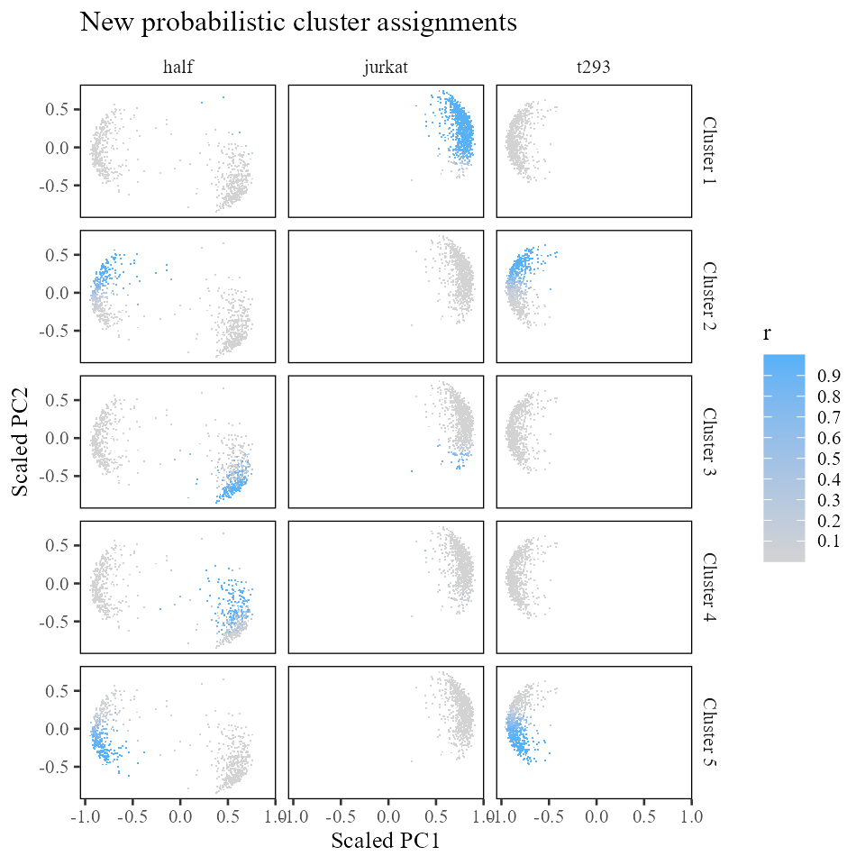
Of course, it is equally important to make sure that our clusters do not mix up different cell types. Recall that in this benchmark, we have access to these ground truth labels.
phi_celltype <- onehot(meta_data$cell_type)
observed_cell_counts <- harmonyObj$R %*% t(phi_celltype)
round(observed_cell_counts)## as.factor(vals)jurkat as.factor(vals)t293
## [1,] 780 0
## [2,] 2 462
## [3,] 277 0
## [4,] 207 0
## [5,] 0 642Initially, the largest error we had was in cluster 2 with 2 out of 462 cells misclustered. So our initial error rate was at most 0.5%. Let’s take a look at the error rates in our maximum diversity clustering (shown below). Applying the same kind of error analysis, we see that we have <0.6% error across all the clusters.
It is worth noting that in the original clustering, clusters 2, 4, and 5 had 0% error. But they also had almost no diversity. These clusters have incurred a non-zero error but gained substantial diversity. This trade-off between accuracy and diversity is present in all integration settings.
round(apply(prop.table(observed_cell_counts, 1), 1, min) * 100, 3)## [1] 0.000 0.390 0.000 0.001 0.008Now let’s re-assign cells to cluster centroids. We did this above, when we assigned cells during the Harmony initialization step. The difference is that we want to assign cells to clusters that are both nearby and will increase diversity.
In the algorithm, this assignment is defined by
Let’s see what this looks like in code. Then we’ll break down the formula to see what it does.
with(harmonyObj, {
distance_matrix <- 2 * (1 - t(Y) %*% t(Z_cos))
distance_score <- exp(-distance_matrix / as.numeric(sigma))
diversity_score <- sweep(E / O, 2, theta, '/') %*% as.matrix(phi)
## new assignments are based on distance and diversity
R_new <- distance_score * diversity_score
## normalize R so each cell sums to 1
R_new <- prop.table(R_new, 2)
})So how does the formula we used above help to create more diverse cluster assignment?
The diversity penalty is encoded in the new term: . This has some familiar data structures: for observed counts, for expected counts, and for the design matrix. is a new term. decides how much weight to give diversity versus distance to cluster centroids.
With , there is no penalty and each cluster gets a score of 1.
## with theta = 0
with(harmonyObj, {
((E+1) / (O+E+1)) ^ 0
})## [,1] [,2] [,3]
## [1,] 1 1 1
## [2,] 1 1 1
## [3,] 1 1 1
## [4,] 1 1 1
## [5,] 1 1 1As we increase , let’s see what happens (shown below). Recall that in cluster , batches 1 and 3 were well represented. Below, note that in that cluster (), the penalties for batches 1 and 3 are relatively low (0.98 and 0.47). On the other hand, batch 2 gets a penalty score of 30914. This means that cells from batches 1 and 3 will be encouraged to move into cluster . On the other hand, cluster is replete with batch 2. The penalty for batch 2 in cluster is relatively low, and noticeably smaller than the penalty score for batch 2 in cluster . Thus, cells from batch 2 will be discouraged from moving into cluster , as this cluster has a higher penalty score for cells from batch 2 compared to other clusters (such as ).
## [,1] [,2] [,3]
## [1,] 0.98 0.26 1.00
## [2,] 0.51 1.00 0.31
## [3,] 0.30 0.71 1.00
## [4,] 0.27 0.89 1.00
## [5,] 0.49 1.00 0.32We should always be wary of setting too high, since the diversity scores can go to . Below, we set to 1 million. We do not recommend setting to 1 million!
## [,1] [,2] [,3]
## [1,] 0 0.00 0.99
## [2,] 0 0.00 0.00
## [3,] 0 0.00 0.99
## [4,] 0 0.00 1.00
## [5,] 0 0.91 0.00Finally, it is important to note that we cannot re-assign cells independently as we did above. Why not? As soon as we re-assign one cell, the diversity counts in the and matrices change. Thus, the assignment formula for all other cells is different! For this reason, we need to assign one cell at a time and update the and as we go. In practice, we can update some chunk of cells (e.g. 5%), update the and matrices, and update another chunk of cells.
In the previous step, we re-assigned cells to maximize diversity within the clusters. With this new assignment, we need to update the cluster centroids. In this step, we’ll use the cell positions and the cluster assignments () to re-position cluster centroids to be close to their assigned cells.
We then scale Y to make each centroid unit length:
Y_new <- cosine_normalize(Y_unscaled, 2)In the previous section, we performed clustering in order to identify shared groups of cells between batches. Now we make use of these groups in order to correct the data in a sensitive way. To run the correction step, we call the function moe_correct_ridge() from the Harmony package. First, let’s see what happens to the cells. In the subsections that follow, we’ll look deeper into how we got there.
harmonyObj$moe_correct_ridge_cpp()
Z_corr <- t(harmonyObj$getZcorr()) # N × d, corrected (not L2-normalised)
do_scatter(Z_cos, meta_data, 'dataset', no_guides = TRUE, do_labels = TRUE) +
labs(title = 'Z_cos before MoE', x = 'PC1', y = 'PC2') +
do_scatter(cosine_normalize(Z_corr, 1), meta_data, 'dataset', no_guides = TRUE, do_labels = TRUE) +
labs(title = 'Z_cos after MoE', x = 'PC1', y = 'PC2')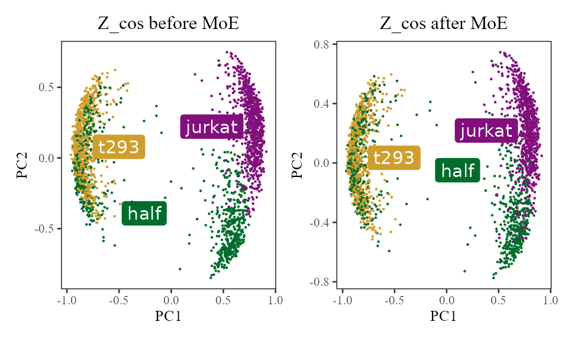
We can see the the jurkat cells are starting to come together on the right (purple and green). There is also more local mixing of the 293T cells on the left (yellow and green). What happened to actually get them there?
For each cell, we estimate how much its batch identity contributes to its PCA scores. We then subtract this contribution from that cell’s PCA scores. That’s it!
Very importantly, this correction factor is not in the unit scaled space (i.e. )! The data in have been projected onto a hypersphere. This makes the cells easier to cluster but the space is no longer closed under linear transformations! In other words, if we push a cell over a bit by adding 10 to PC1, that cell is no longer on the hypersphere.
The Harmony object stores two embedding matrices accessible via getter methods. The plot below shows all three conceptual quantities. To summarize:
harmonyObj$getZorig()): original PCA embeddings, never
modifiedharmonyObj$getZcorr()): corrected PCA embeddings
(unnormalised), equal to
minus the batch correction factorscosine_normalize(Z_corr, 1); not stored inside
the harmony object
do_scatter(Z_orig, meta_data, 'dataset', no_guides = TRUE, do_labels = TRUE) +
labs(title = 'Z_orig', subtitle = 'Original PCA embeddings', x = 'PC1', y = 'PC2') +
do_scatter(Z_corr, meta_data, 'dataset', no_guides = TRUE, do_labels = TRUE) +
labs(title = 'Z_corr', subtitle = '= Z_orig - correction_factors', x = 'PC1', y = 'PC2') +
do_scatter(cosine_normalize(Z_corr, 1), meta_data, 'dataset', no_guides = TRUE, do_labels = TRUE) +
labs(title = 'Z_cos', subtitle = '= Unit_scaled(Z_corr)', x = 'Scaled PC1', y = 'Scaled PC2') +
NULL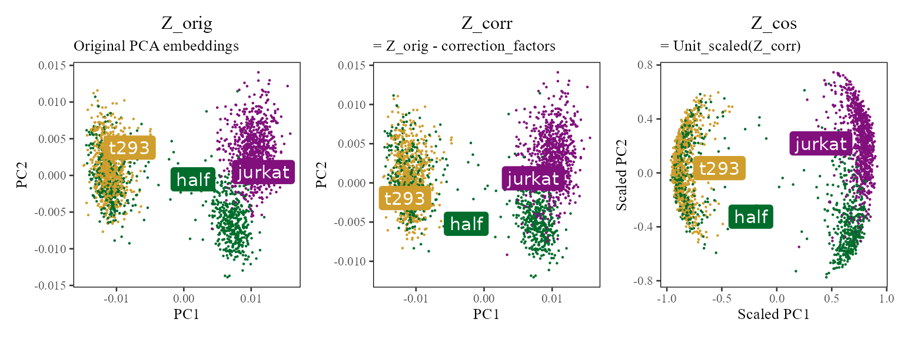
Let’s take a look a closer look at these cell specific correction factors. For exposition, let’s focus on PC1 and compare each cell’s position before (from ) and after (from ) correction.
The plots below show the PC1 value before (x-axis) and after (y-axis) correction for each cell. The black line is drawn at to represent the level curve of no change.
plt <- data.table(PC1_After = Z_corr[, 1], PC1_Before = Z_orig[, 1]) %>%
cbind(meta_data) %>%
dplyr::sample_frac(1L) %>%
ggplot(aes(PC1_Before, PC1_After)) +
geom_abline(slope = 1, intercept = 0) +
theme_tufte(base_size = 10) + geom_rangeframe() +
scale_color_tableau() +
guides(color = guide_legend(override.aes = list(stroke = 1, alpha = 1, shape = 16, size = 4))) +
NULL
plt + geom_point(shape = '.', aes(color = dataset)) +
labs(x = 'PC1 before correction', y = 'PC1 after correction',
title = 'PC1 correction for each cell', subtitle = 'Colored by Dataset') +
plt + geom_point(shape = '.', aes(color = cell_type)) +
labs(x = 'PC1 before correction', y = 'PC1 after correction',
title = 'PC1 correction for each cell', subtitle = 'Colored by Cell Type') +
NULL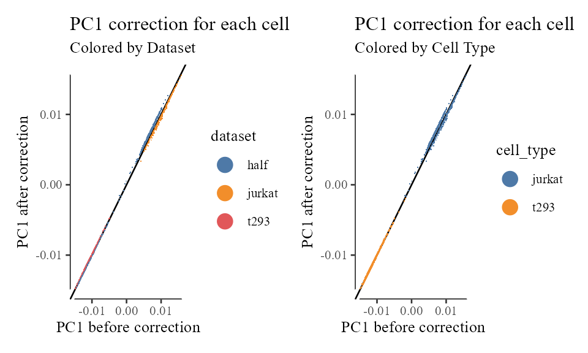
We can see a few interesting things from these plots.
The theory behind this algorithm is based on the Mixture of Experts model. This is a natural extension of linear modeling, in which each cluster is deemed an expert and is assigned its own linear model.
We model each PC coordinate with a combination of linear factors.
In the model above, each cluster gets 4 terms: is the intercept term. This term is independent of which dataset a cell comes from. Therefore, it represents the contribution of cell type or cell state to the PC score. The other three terms are accompanied by an indicator variable. This means that a cell from dataset half will have equal to 1 and the rest 0.
Following this cell from dataset half half, we can write rewrite the MoE equation above as
We estimate the matrix of linear regression terms using the formula described in the manuscript:
The matrix above contains linear regression terms for the the intercept and the batch terms:
W <- list()
## Convert sparse data structures to dense matrix
Phi.moe <- as.matrix(phi_moe)
lambda_mat <- harmonyObj$getLambda()
## Get beta coefficients for all the clusters
for (k in 1:harmonyObj$K) {
lambda <- diag(lambda_mat[k,])
W[[k]] <- solve(Phi.moe %*% diag(harmonyObj$R[k, ]) %*% t(as.matrix(Phi.moe)) + lambda) %*%
(Phi.moe %*% diag(harmonyObj$R[k, ])) %*% Z_orig
}Let’s take a look at how these regression terms relate to the data. Recall that the mixture of experts model is trying to estimate the contribution of intercept and batch to cell’s positions in space. So first we’ll take a look at the positions of each batch and each cluster in the original PCA embeddings. The color below represents soft cluster membership learned using the maximum diversity clustering above.
cluster_assignment_matrix <- harmonyObj$R
Z_orig %>% data.frame() %>%
cbind(meta_data) %>%
tibble::rowid_to_column('id') %>%
dplyr::inner_join(
cluster_assignment_matrix %>% t() %>% data.table() %>%
tibble::rowid_to_column('id') %>%
tidyr::gather(cluster, r, -id) %>%
dplyr::mutate(cluster = gsub('V', 'Cluster ', cluster)),
by = 'id'
) %>%
dplyr::sample_frac(1L) %>%
ggplot(aes(X1, X2, color = r)) +
geom_point(shape = 0.2) +
theme_tufte(base_size = 10) + theme(panel.background = element_rect()) +
facet_grid(cluster ~ dataset) +
scale_color_gradient(low = 'grey', breaks = seq(0, 1, .2)) +
labs(x = 'PC1', y = 'PC2', title = 'Cluster assigned in original PCA space (Z_orig)')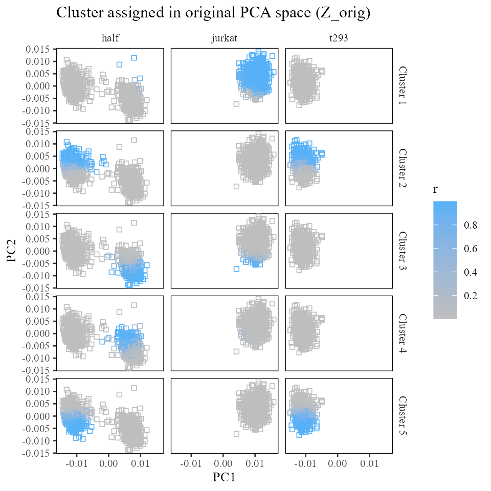
Now let’s draw the terms into this space. For each cluster, we expect the sum of the intercept plus the batch terms to land squarely in the center of each batch:cluster. The arrows below represent the intercept (in black) and batch (colored) offsets.
plt_list <- lapply(1:harmonyObj$K, function(k) {
plt_df <- W[[k]] %>% data.frame() %>%
dplyr::select(X1, X2)
## Append n
plt_df <- plt_df %>%
cbind(
data.frame(t(matrix(unlist(c(c(0, 0), rep(plt_df[1, ], 3))), nrow = 2))) %>%
dplyr::rename(x0 = X1, y0 = X2)
) %>%
cbind(type = c('intercept', unique(meta_data$dataset)))
plt <- plt_df %>%
ggplot() +
geom_point(aes(X1, X2),
data = Z_orig %>% data.frame(),
size = 0.5,
color = 'grey'
) +
geom_segment(aes(x = x0, y = y0, xend = X1 + x0, yend = X2 + y0, color = type), linewidth=1) +
scale_color_manual(values = c('intercept' = 'black', colors_use)) +
theme_tufte(base_size = 10) + theme(panel.background = element_rect()) +
labs(x = 'PC 1', y = 'PC 2', title = sprintf('Cluster %d', k))
plt <- plt + guides(color = guide_legend(override.aes = list(stroke = 1, alpha = 1, shape = 16)))
# if (k == harmonyObj$K) {
# } else {
# plt <- plt + guides(color = FALSE)
# }
plt
})
Reduce(`+`, plt_list) +
patchwork::plot_annotation(title = 'Mixture of experts beta terms before correction (Z_orig)') +
plot_layout(ncol = 2)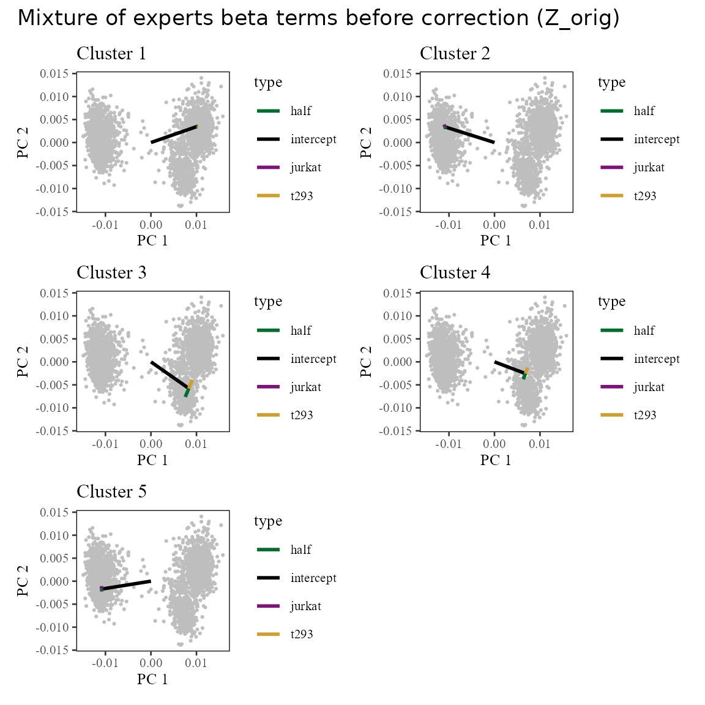
After correction, we remove the batch specific terms (colored arrows above). We can see the result in the corrected linear space (). Notice that now, the cells are centered around the tips of the black arrows, which represent the intercept term. This is because we’ve removed the effect of the batch terms (colored arrows).
plt_list <- lapply(1:harmonyObj$K, function(k) {
plt_df <- W[[k]] %>% data.frame() %>%
dplyr::select(X1, X2)
plt_df <- plt_df %>%
cbind(
data.frame(t(matrix(unlist(c(c(0, 0), rep(plt_df[1, ], 3))), nrow = 2))) %>%
dplyr::rename(x0 = X1, y0 = X2)
) %>%
cbind(type = c('intercept', unique(meta_data$dataset)))
plt <- plt_df %>%
ggplot() +
geom_point(aes(X1, X2),
data = Z_corr %>% data.frame(),
shape = '.',
color = 'grey'
) +
geom_segment(aes(x = x0, y = y0, xend = X1 + x0, yend = X2 + y0, color = type), linewidth=1) +
scale_color_manual(values = c('intercept' = 'black', colors_use)) +
theme_tufte(base_size = 10) + theme(panel.background = element_rect()) +
labs(x = 'PC 1', y = 'PC 2', title = sprintf('Cluster %d', k))
plt <- plt + guides(color = guide_legend(override.aes = list(stroke = 1, alpha = 1, shape = 16)))
plt
})
Reduce(`+`, plt_list) +
patchwork::plot_annotation(title = 'Mixture of experts beta terms after correction (Z_corr)') +
plot_layout(ncol = 2)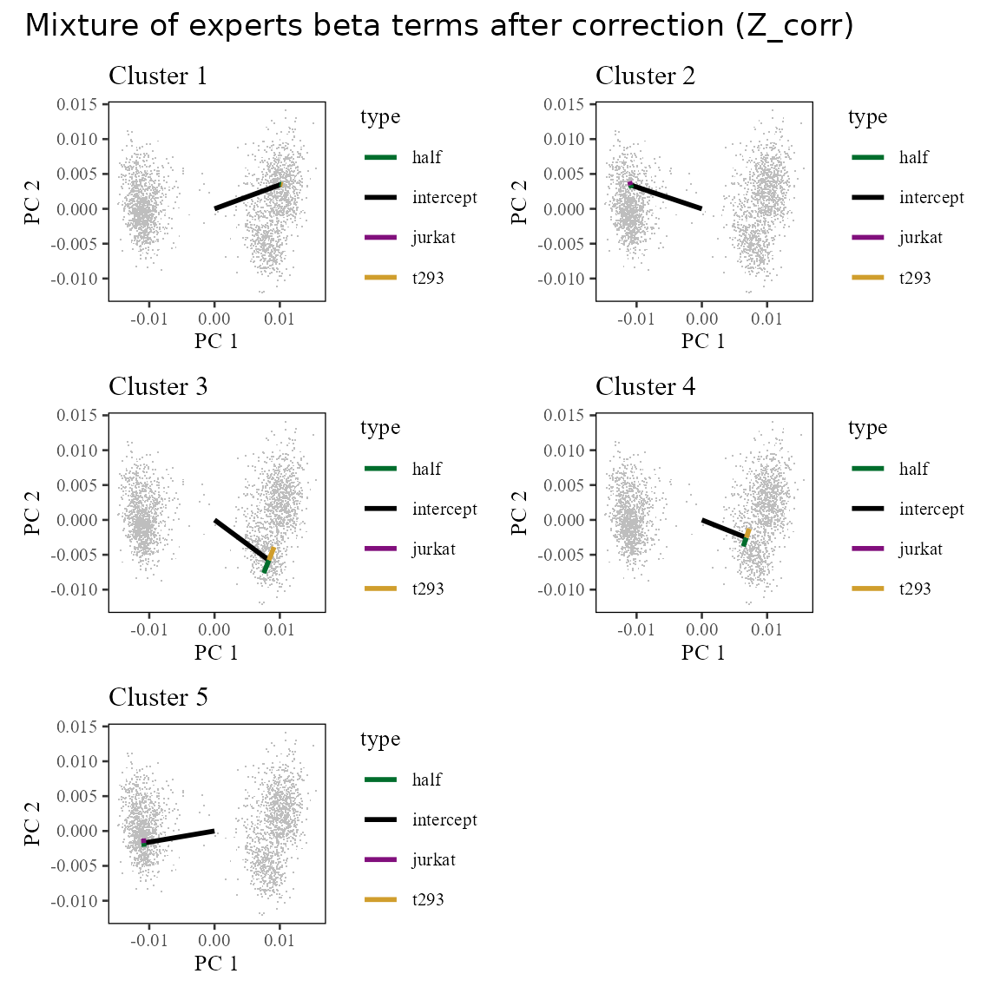
How does one cell get its correction factor?
Recall from above that each cell is now modeled with intercept and batch specific terms:
Z_i <- Z_orig[5, ]
Z_i_pred <- Reduce(`+`, lapply(1:harmonyObj$K, function(k) {
W[[k]] * phi_moe[, 5] * harmonyObj$R[k, 5]
})) %>% colSumsThe plot below shows the observed and predicted values of all 20 PCs for cell 5.
data.table(obs = Z_i, pred = Z_i_pred) %>%
tibble::rowid_to_column('PC') %>%
ggplot(aes(obs, pred)) +
geom_point(shape = 21) +
geom_label_repel(aes(label = PC)) +
geom_abline(slope = 1, intercept = 0) +
theme_tufte() + geom_rangeframe() +
labs(x = 'Observed PC score', y = 'Predicted PC score', title = 'Observed and predicted values of PC scores\nfor cell 5') +
NULL ## Warning: ggrepel: 12 unlabeled data points (too many overlaps). Consider
## increasing max.overlaps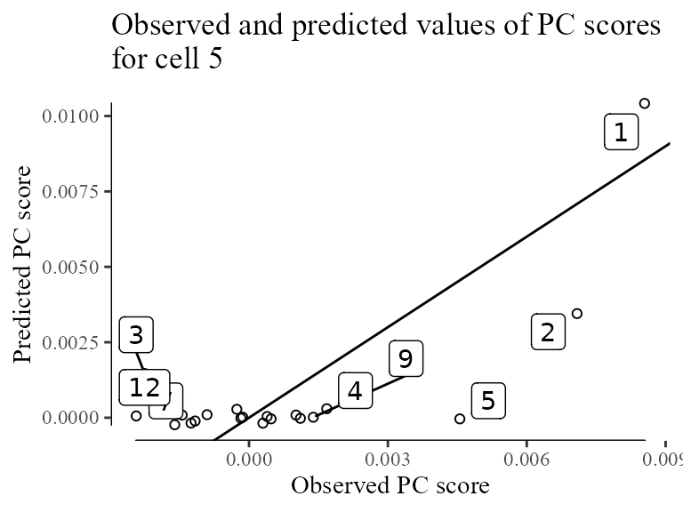
Now that we’ve modeled all these contributions to PCs, we can remove the batch specific terms from cell to get its corrected position () in :
delta <- Reduce(`+`, lapply(1:harmonyObj$K, function(k) {
W[[k]][2:4, ] * phi[, 5] * harmonyObj$R[k, 5]
})) %>% colSums
Z_corrected <- Z_orig[5, ] - deltaLet’s see where this one cell moves in the original embeddings. Cell 5 is highlighted in red. It’s individual correction factor is shown with the red arrow.
Z_orig %>% data.frame() %>%
ggplot(aes(X1, X2)) +
geom_point(shape = '.') +
geom_point(
data = data.frame(Z_orig[5, , drop = FALSE]),
color = 'red'
) +
geom_segment(
data = data.table(x0 = Z_orig[5, 1],
y0 = Z_orig[5, 2],
x1 = Z_corrected[1],
y1 = Z_corrected[2]),
aes(x = x0, y = y0, xend = x1, yend = y1),
linewidth = 1,
color = 'red',
arrow = arrow(length = unit(0.05, "npc"), type = 'closed')
) +
theme_tufte(base_size = 10) + geom_rangeframe() +
labs(x = 'PC1', y = 'PC2', title = 'Correction of cell #5')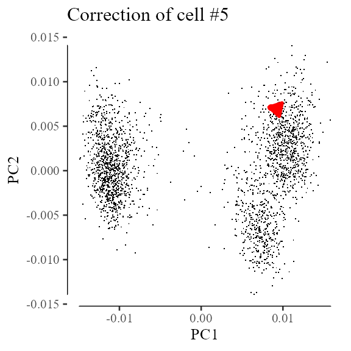
The sections above broke down the Harmony algorithm. Now’s let’s take a more holistic look. In the code below, let’s look at the corrected PC values () after each round of Harmony (clustering + correction). Since we’re not visualizing the clusters in this section, let’s increase nclust to 50. After the 1st and 2nd rounds, we can see considerably more mixing. By round 3 though, the cells are pretty well mixed and we stop.
harmonyObj <- RunHarmony(
data_mat = V, ## PCA embedding matrix of cells
meta_data = meta_data, ## dataframe with cell labels
theta = 1, ## cluster diversity enforcement
vars_use = 'dataset', ## (list of) variable(s) we'd like to Harmonize out
nclust = 50, ## number of clusters in Harmony model
max_iter = 0, ## don't actually run Harmony, stop after initialization
return_object = TRUE ## return the full Harmony model object, not just the corrected PCA matrix
)## Transposing data matrix## Using automatic lambda estimation## Thetas: 1## Initializing state using k-means centroids initialization## Initializing centroids
Z_cos <- cosine_normalize(t(harmonyObj$getZorig()), 1) # N × d, initial state
i <- 0
do_scatter(Z_cos, meta_data, 'dataset', no_guides = TRUE, do_labels = TRUE) +
labs(title = sprintf('Round %d', i), subtitle = 'Colored by dataset', x = 'Scaled PC1', y = 'Scaled PC2') +
do_scatter(Z_cos, meta_data, 'cell_type', no_guides = TRUE, do_labels = TRUE) +
labs(title = sprintf('Round %d', i), subtitle = 'Colored by cell type', x = 'Scaled PC1', y = 'Scaled PC2') +
NULL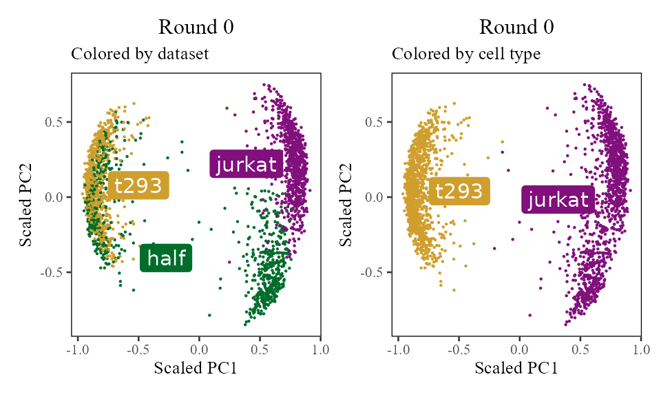
for (i in 1:5) {
harmony:::harmonize(harmonyObj, 1)
Z_cos <- cosine_normalize(t(harmonyObj$getZcorr()), 1) # N × d, after round i
plt <- do_scatter(Z_cos, meta_data, 'dataset', no_guides = TRUE, do_labels = TRUE) +
labs(title = sprintf('Round %d', i), subtitle = 'Colored by dataset', x = 'Scaled PC1', y = 'Scaled PC2') +
do_scatter(Z_cos, meta_data, 'cell_type', no_guides = TRUE, do_labels = TRUE) +
labs(title = sprintf('Round %d', i), subtitle = 'Colored by cell type', x = 'Scaled PC1', y = 'Scaled PC2') +
NULL
plot(plt)
}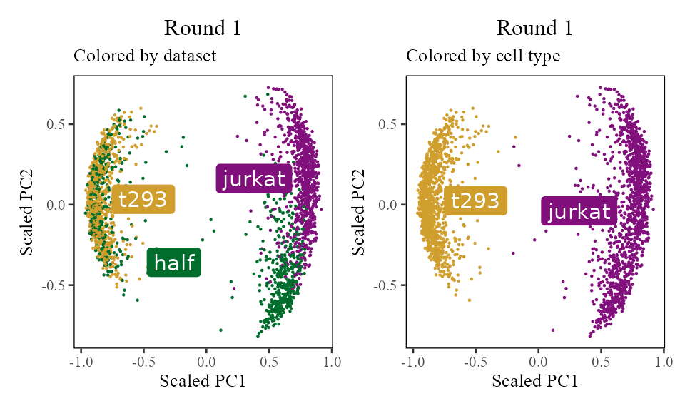
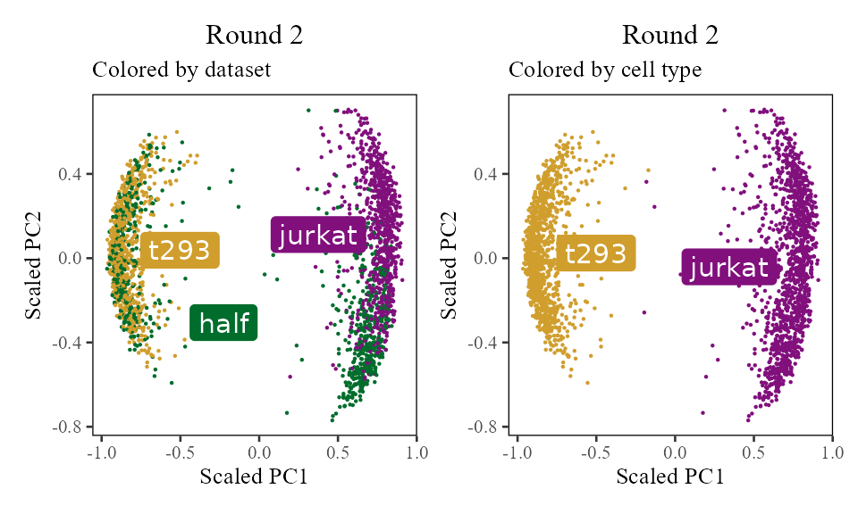
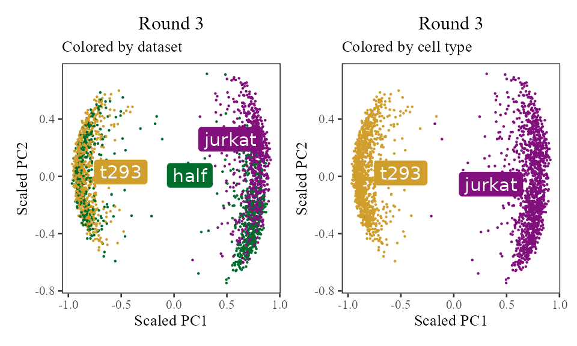
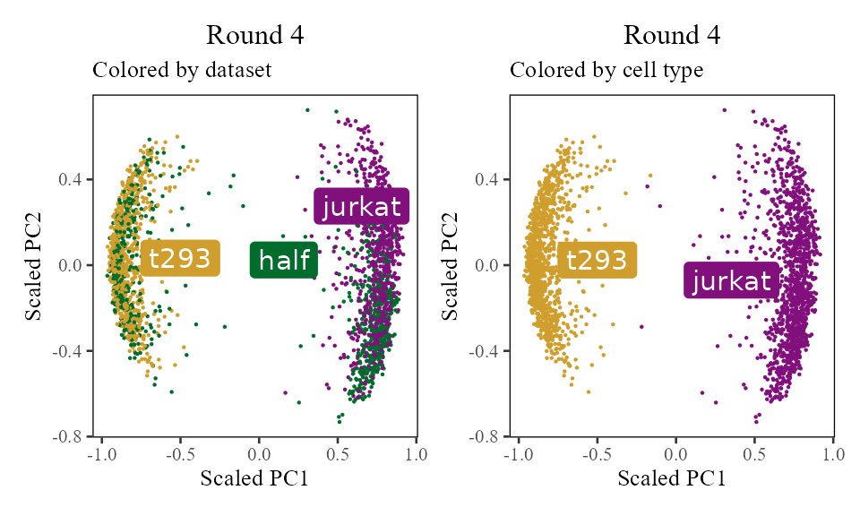
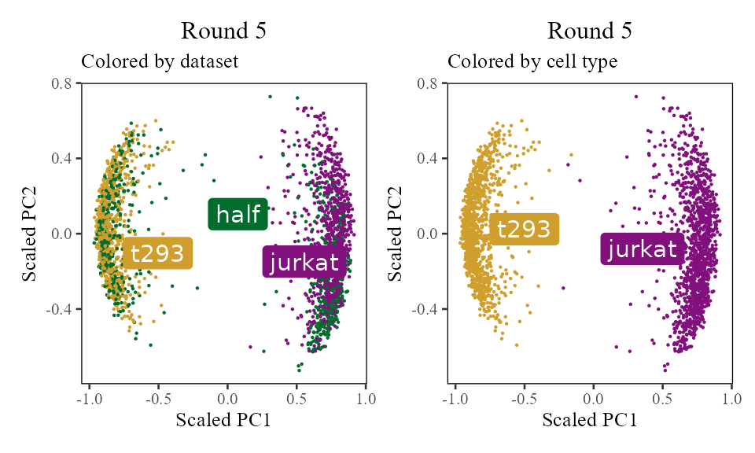
## R version 4.5.1 (2025-06-13)
## Platform: x86_64-conda-linux-gnu
## Running under: Arch Linux
##
## Matrix products: default
## BLAS/LAPACK: /home/main/miniconda3/envs/Rmain/lib/libopenblasp-r0.3.30.so; LAPACK version 3.12.0
##
## locale:
## [1] LC_CTYPE=en_US.UTF-8 LC_NUMERIC=C
## [3] LC_TIME=en_US.UTF-8 LC_COLLATE=en_US.UTF-8
## [5] LC_MONETARY=en_US.UTF-8 LC_MESSAGES=en_US.UTF-8
## [7] LC_PAPER=en_US.UTF-8 LC_NAME=C
## [9] LC_ADDRESS=C LC_TELEPHONE=C
## [11] LC_MEASUREMENT=en_US.UTF-8 LC_IDENTIFICATION=C
##
## time zone: America/New_York
## tzcode source: system (glibc)
##
## attached base packages:
## [1] stats graphics grDevices utils datasets methods base
##
## other attached packages:
## [1] patchwork_1.3.2 harmony_2.0.0 Rcpp_1.1.0 ggrepel_0.9.6
## [5] ggthemes_5.2.0 lubridate_1.9.4 forcats_1.0.1 stringr_1.5.2
## [9] dplyr_1.1.4 purrr_1.1.0 readr_2.1.5 tidyr_1.3.1
## [13] tibble_3.3.0 ggplot2_4.0.0 tidyverse_2.0.0 data.table_1.17.8
##
## loaded via a namespace (and not attached):
## [1] sass_0.4.10 generics_0.1.4 lattice_0.22-7
## [4] stringi_1.8.7 hms_1.1.3 digest_0.6.37
## [7] magrittr_2.0.4 evaluate_1.0.5 grid_4.5.1
## [10] timechange_0.3.0 RColorBrewer_1.1-3 fastmap_1.2.0
## [13] Matrix_1.7-4 jsonlite_2.0.0 scales_1.4.0
## [16] RhpcBLASctl_0.23-42 codetools_0.2-20 textshaping_1.0.3
## [19] jquerylib_0.1.4 cli_3.6.5 rlang_1.1.6
## [22] cowplot_1.2.0 withr_3.0.2 cachem_1.1.0
## [25] yaml_2.3.10 tools_4.5.1 tzdb_0.5.0
## [28] vctrs_0.6.5 R6_2.6.1 lifecycle_1.0.4
## [31] fs_1.6.6 htmlwidgets_1.6.4 ragg_1.5.0
## [34] pkgconfig_2.0.3 desc_1.4.3 pkgdown_2.2.0
## [37] pillar_1.11.1 bslib_0.9.0 gtable_0.3.6
## [40] glue_1.8.0 systemfonts_1.3.1 xfun_0.53
## [43] tidyselect_1.2.1 knitr_1.50 farver_2.1.2
## [46] htmltools_0.5.8.1 labeling_0.4.3 rmarkdown_2.30
## [49] compiler_4.5.1 S7_0.2.0